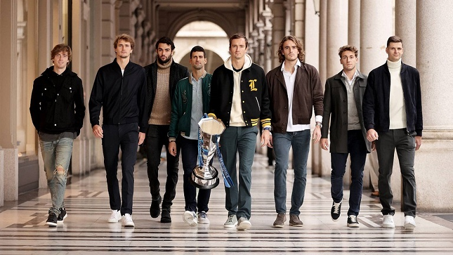

Top 5 des raisons d'aimer le tennis

(De gauche à droite : Andrey Rublev 🇷🇺, Alexander Zverev 🇩🇪, Matteo Berrettini 🇮🇹, Novak Djokovic 🇷🇸, Daniil Medvedev 🇷🇺, Stefanos Tsitsipas 🇬🇷, Casper Ruud 🇳🇴, Hubert Hurkacz 🇵🇱)
1. C'est un sport qui se joue en grande majorité sur le plan mental
Bien que les résultats des matchs sont souvent déterminés par le niveau et la qualité des joueurs, une importante donnée à prendre en compte est l'aspect mental du tennis. Il est important de toujours être concentré sur tous les points et de donner toujours le meilleur de soi-même. On voit souvent des joueurs perdre leur sang froid et craquer en plein match à cause de la pression ou de la frustration de la rencontre. C'est ce qui fait la différence entre des joueurs classiques et les meilleurs joueurs du monde. Les meilleurs savent faire face à la pression et restent toujours concentrés sur tous les points.

2. La durée des matchs
Contrairement aux sports collectifs (football, rugby, basketball...) on ne connaît pas à l'avance la durée d'un match de tennis. Tout dépend du niveau des joueurs, de la longueur des échanges et de la bataille qu'ils se livrent sur le terrain. Les matchs peuvent aller d'une trentaine de minutes à plusieurs heures. Le record de durée d'un match de tennis est de 11 heures et 5 minutes de jeu. Ce match historique a opposé l'américain John Isner au français Nicolas Mahut à Wimbledon en 2010, avec une victoire de l'américain 6/4, 3/6, 6/7, 7/6, 70/68. Le match s'est déroulé sur 3 jours.
3. Le rôle du public
Comme dit précedemment, la concentration et le mental sont essentiels dans le tennis. Pour permettre cela, il ne doit pas y avoir de bruit dans les stades durant les points. C'est à la fin de ceux-ci que les spectateurs sont autorisés à parler, crier ou applaudir pour montrer leur reconnaissance et leur soutien aux joueurs. Quoi de plus motivant pour un joueur qu'une foule de personnes criant son nom après un point difficilement gagné ?

4. La grande variété des styles de jeu
Service puissant, volée, slice, amortie, lob, revers à une main, revers à deux mains... Il existe dans le tennis une immense variété de styles de jeu et de joueurs différents. Chaque joueur a son propre style, ses propres qualités et ses propres défauts. C'est ce qui fait son charme. Certains joueurs sont très puissants et se basent sur le service, la volée ou les points gagnants pour remporter des matchs. D'autres se concentrent plutôt sur la défense et les longs points car ils se savent plus endurants. Quoiqu'il en soit, il y en a pour tous les goûts au tennis.

5. C'est un sport où l'on est entièrement seul
Parce que globalement, le coach n’a quasiment pas le droit d’intervenir, même si la législation est en train de changer. Et que de ce fait, l’aspect mental est d’autant plus important qu’on ne peut profiter de l’avis extérieur d’un entraîneur qui donne des consignes et apporte des solutions. On est seul pour trouver ses solutions et l’on peut payer cher tout ce que l’on tente.

Pour plus de renseignements sur le tennis:
Classement ATP
Classement WTA
Calendrier